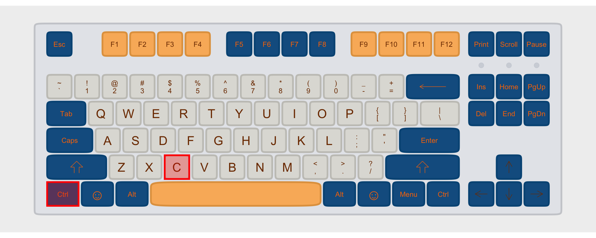

Keyboarding
In command line interfaces, there are some characters you’ll want to enter frequently which don’t otherwise show up very often when you’re typing. This guide is meant to help you find those keys.
Individual Keys
` back tick
This is importantly not the same as your familiar apostrophe key.

\ backslash
This symbol is used to separate directory names in DOS, but is more usually used as an “escape” character. It is importantly different from the forward slash symbol, /.

/ slash, or forward slash
While we’re on the subject, here’s forward slash, used to separate directories on Unix-like systems (including macOS).
[ and ] square brackets
These have a number of different uses in programming languages. Usually when you have an “open” bracket [ you need to make sure that you “close” it ].
Modified Keys
You get the following symbols by holding Shift + another key.
~ tilde
This symbol is used as a shortcut for your home directory in unix-like systems, and for many other purposes

^ caret
This symbol is sometimes used to indicate the Control key on a Mac keyboard, but usually it’s the caret.

_ underscore
Underscores are often used in file and variable names.
{ and } curly brackets
A lot like the square brackets, these serve a number of different uses. And again, when you have an open backet { you’ll want to make sure you close it }.
| pipe or bar
This vertical line often means “or” in programming languages.

< and > less than & greater than or angle brackets
Sometimes the symbols < and > are used for their mathematical meaning of “less than” and “greater than.” Other times they’re used as brackets, a lot like the square or curly brackets.
Modifier Combos
Sometimes you’ll see key combinations suggested to help you use the command line and other programming languages. For example, the key combo “Control+C” or “Ctrl+C” will end whatever process is running in a Unix-like system. What this notation means is that you should press the Control key, and while continuing to hold it, press the C key.

If you ever see more than two keys included in a key combination, assume they need to be pressed and held in the order they appear.